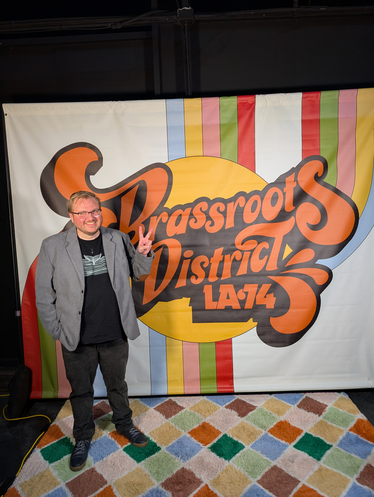

Down a dark corridor in Pico Boulevard, the world of “Brassroots District L.A. ‘74,” hums with neon lights, reverberating bass and thick incense. The immersive theatre and live concert experience pulls audiences into a 1970s discotheque.
The Transformation Station subtly primes audiences to time travel by seamlessly integrating elements from the 1970s into the everyday world. (Photo provided by Brassroots District)
Chris Porter, a writer for “Brassroots District,” discusses crafting a “transformation station” for participants to seamlessly enter another decade. In what Porter describes as a “nebulous space,” a pre-show patio party invites participants to interact with characters before the show officially begins.
These exchanges are emotional time machines, grounding audiences in the resemblance of another decade before they’re thrust into it. At Brassroots District, people can feel, navigate, and relive history. These theatrical sleights of hand empower audiences to feel a sense of agency and direct influence over the story.

“The big thing is eye contact—I’m talking to you,” Porter says. “People want that connection. Something about simply taking someone’s hand is so simple but powerful.”
Chris Porter in front of the Brassroots District sign—the only opportunity in the experience where audience members can use their phones. (Photo provided by Chris Porter)